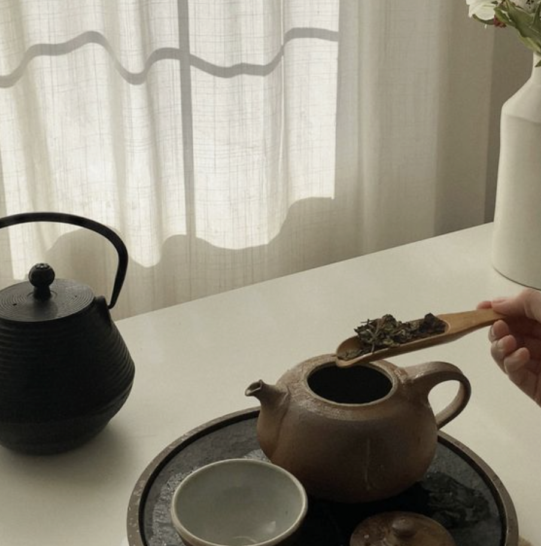

Welcome to The Mindful and the Minimalist
Explore the fusion of Japanese culinary wisdom with minimalist principles on our website, where simplicity meets sophistication in every recipe.
Discover the essence of simplicity in every dish. Journey into a world where each flavor is an homage to the art of less is more. Delve into recipes that celebrate the harmony of minimal ingredients for maximum taste.

Why Minimalist Cooking?
An average human being makes about 35,000 choices in a single day. Decision Fatigue is a very real thing. That is where minimalism steps in to save us all. A minimalist approach to cooking means- keeping it simple. Not only does a minimalist diet get sweeter for the wallets but it also helps develop a more organized and healthier mindset.